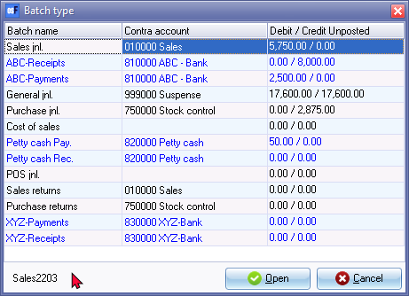

Batch entry selection screen
These are so named because all transactions of the same type are grouped together as a “batch” (for example, all the receipts or, all the purchases).
Batch types are added / renamed and/or edited in Setup → Batch types. (Setup ribbon).
The following are the most commonly used batch types are included in the Sets of Books:
- Sales journal - This journal or book is used to record your sales for the day. You would record the invoice number, date of invoice, invoice details, the debtor (who you sold to), Output VAT/GST/Sales Tax (if you are registered for VAT/GST/Sales Tax) and the amount you charged the customer - including or excluding VAT/GST/Sales Tax, depending on your requirements.
- Purchase journal - This journal is used to record all the purchases, which were made in the normal operation of your business. Details which would be recorded include the supplier invoice or other number (as a reference), the date of the purchase, purchase details, from whom you purchased, Input VAT/GST/Sales Tax (if you are VAT/GST/Sales Tax registered and if applicable) and the amount you were charged, including or excluding VAT/GST/Sales Tax, depending on your requirements.
- Cashbook - This is made up of both the Receipts and Payments Journals. The Receipts and Payments Journals of the Cashbook are reconciled with a bank statement.
- Receipts journal - All deposits, along with the date of the deposit, the name of the depositor and the amount are recorded in this book. For debtors it would have the effect of debiting the bank account and crediting the debtor, after the debtor has been debited through the Sales journal.
- Payments journal - All payments made, along with the date, detail and amount are recorded here. Payments would have the effect of debiting the creditor or the expense, and crediting the bank.
- General journal - This book is used to enter all your opening balances, correct any errors you have made and process items like depreciation of assets and the payroll. Depending on the need, the payroll (or any other journal) for example, can be set up as separate batch type and it will then be possible to print a separate report for that function will then be generated. Other journals that may be required are the sales returns or debtor allowances journal, petty cash journal, depreciation journal or payroll journal.
To select and open a batch:
- On the Default ribbon, select Batch entry (F2).

- Select the batch from the list and click on the Open button. The "Batch entry" screen for the selected Batch type will be displayed.
|
|
Once the options for a batch or journal has been set up, the Contra account code and name or description, will be displayed. If the options for a batch or journal, which have not yet been setup, it will display no Contra account. If you access a batch type and the contra account is for example, displayed as the Sales account (010-000), you may change the contra account when you set the options for a batch. |

|
|
If any transactions have been entered into a batch (journal), the total amount of the transactions entered in the debit column and/or the total amount of the transactions entered in the credit column will be displayed as unposted. If the batch is in balance (amounts of equal value is entered in the debit and credit columns or if the batch has been balanced), the debit and credit amounts will reflect the same value. |
|
|
The alias (batch name) will display at the bottom (left to the Open and Cancel buttons. |